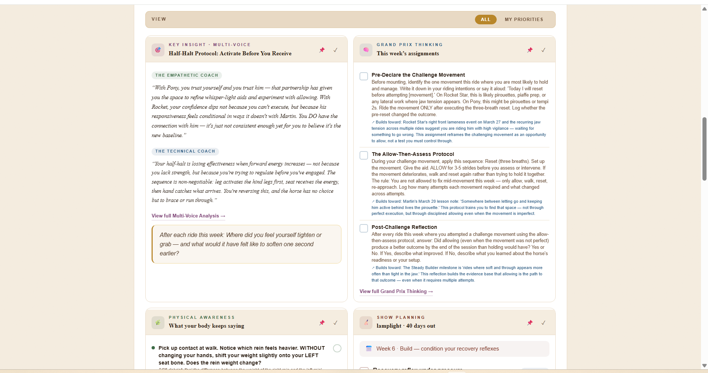
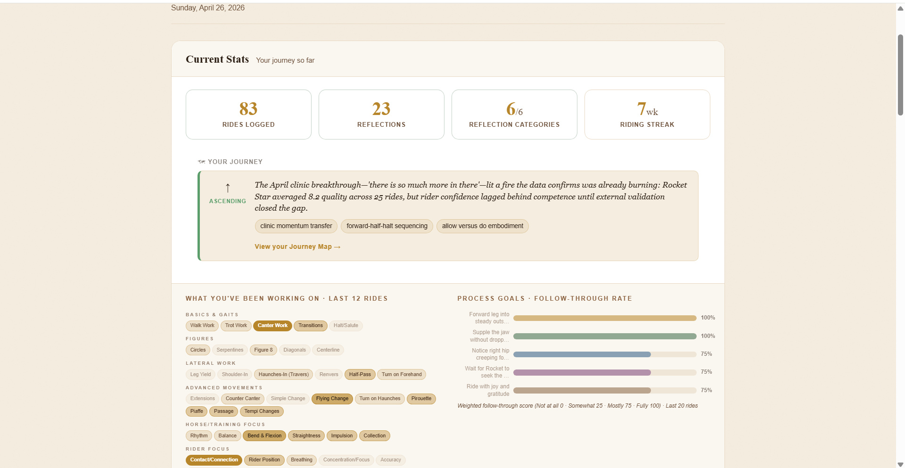
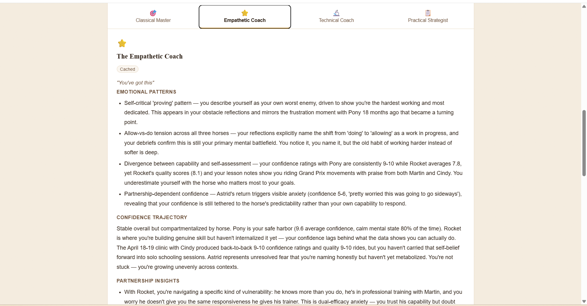
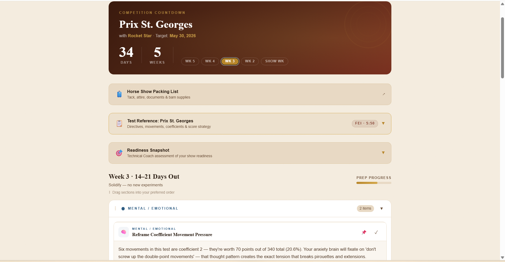
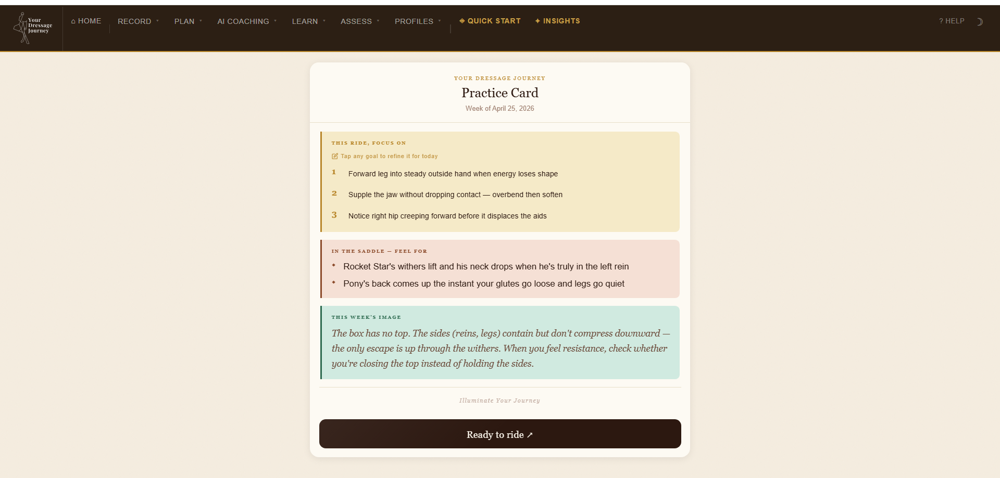

Five minutes after a ride to capture it. A weekly reflection that goes deeper. AI analysis through four expert voices. A growing Journey Map. Here's the full picture, with sample screenshots, of how YDJ walks with you through every step of the learning cycle.
Curious about the research behind these design choices? Read the research behind YDJ →
Most apps only capture what happened. YDJ supports the whole learning cycle. Setting you up before you ride, capturing what happened after, extending learning off-horse, and bringing it all back to your next ride.
Show up ready for your ride or lesson. Set your intentions, warm up your body, and focus your mind.
Debrief your ride at the barn. Takes 2 to 5 minutes on your phone while you untack. Voice input supported.
Choose one of six reflection categories. Guided prompts help you go deeper in 10–15 minutes.
Visualization scripts, test study, physical awareness exercises, and habit tracking. Every hour away from the barn moves you forward.
Your data and your horse's patterns, analyzed through four distinct coaching perspectives. Each voice reveals something the others might miss.
Go back to your next ride with fresh clarity, a focused intention, and a growing map of where you've been and where you're going.
The "too much" problem, solved.
Every output in YDJ feeds a single weekly surface, so you always know where to start, and nothing important gets buried.

Every piece of data you contribute feeds a suite of AI-powered analyses. Each is designed to reveal a different dimension of your riding life. The list keeps growing as the platform does.


YDJ is the only platform that tracks the body and mind of both horse and rider. Asymmetries, tendencies, good days and hard ones, for both of you.
Over time, the AI suggests ways to help you work better together. The platform tailors guidance to the partnership, not just the person. Because two athletes show up for every ride.
Position patterns, physical habits, mental state, learning style, off-horse practice. All tracked longitudinally and connected to what happens in the saddle.
Asymmetries, warm-up needs, tension patterns, soundness history, and how those patterns interact with yours. All surfaced from the data you're already capturing.
Show Planner builds week-by-week preparation around your test, your readiness, and your specific concerns. Nothing left to last-minute.

Create your personalized pre-ride ritual with links to what you want to work on. Review your Lesson Prep to give your coach a meaningful anchor. Check your Practice Card for a small set of focused process goals, the sensations to feel for in the saddle, and a mental image to carry with you.

Choose your tier. Build your profile. Receive your First Light. Start logging rides, and let the picture build itself.